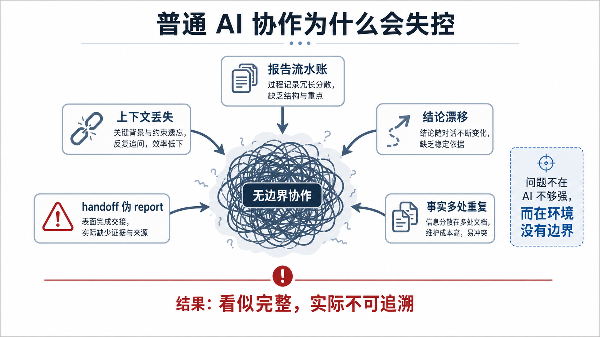
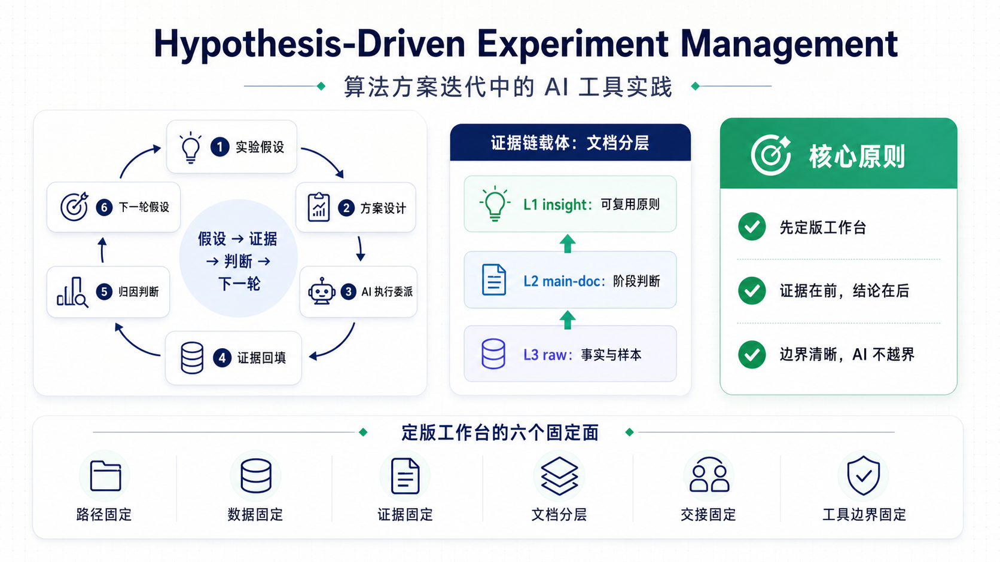
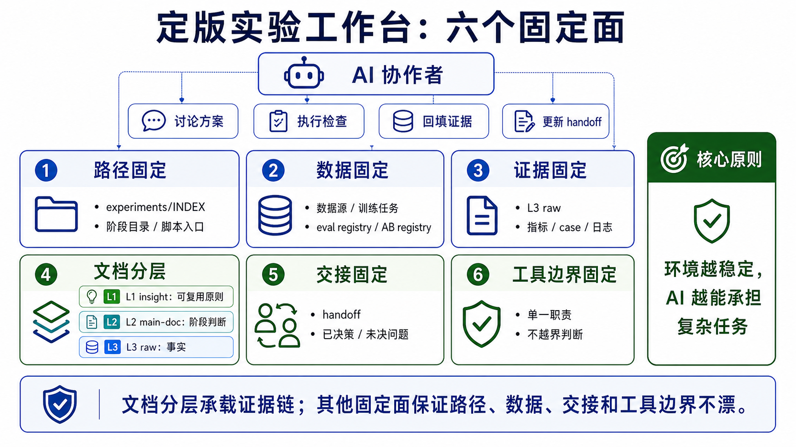
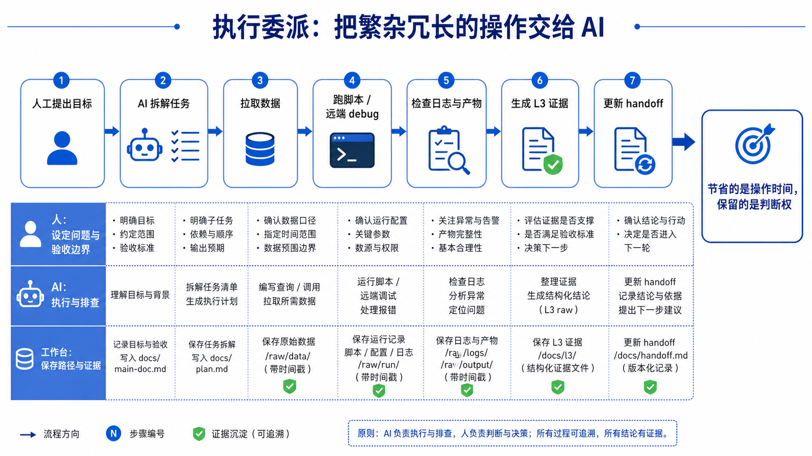
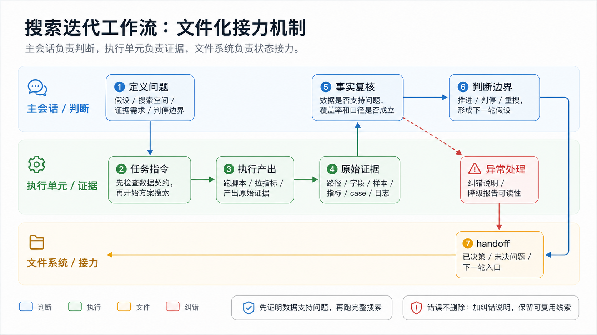
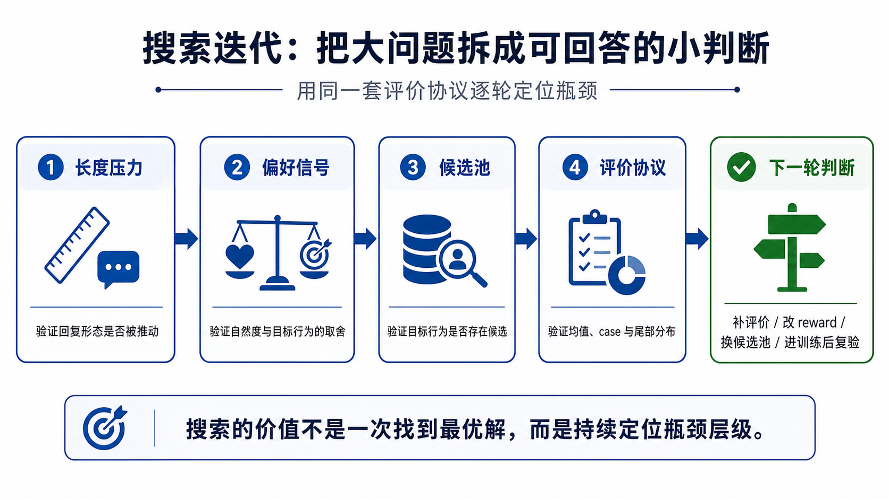
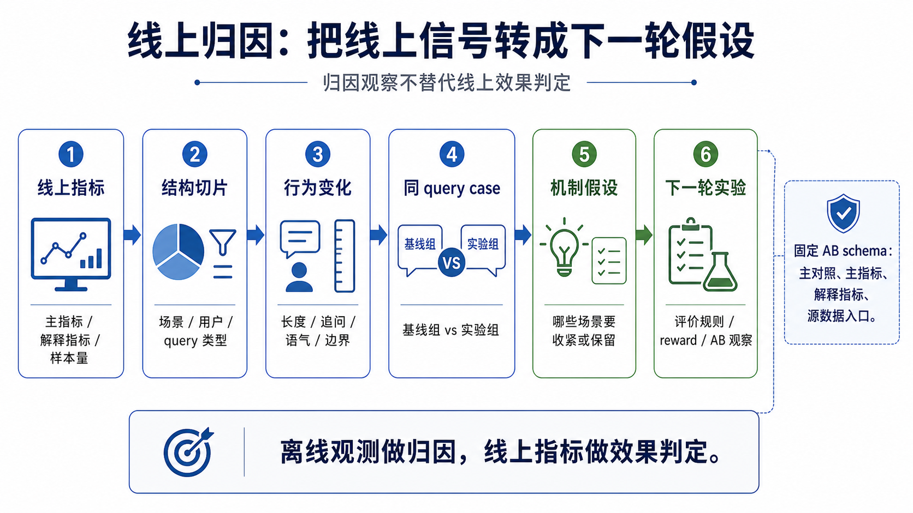
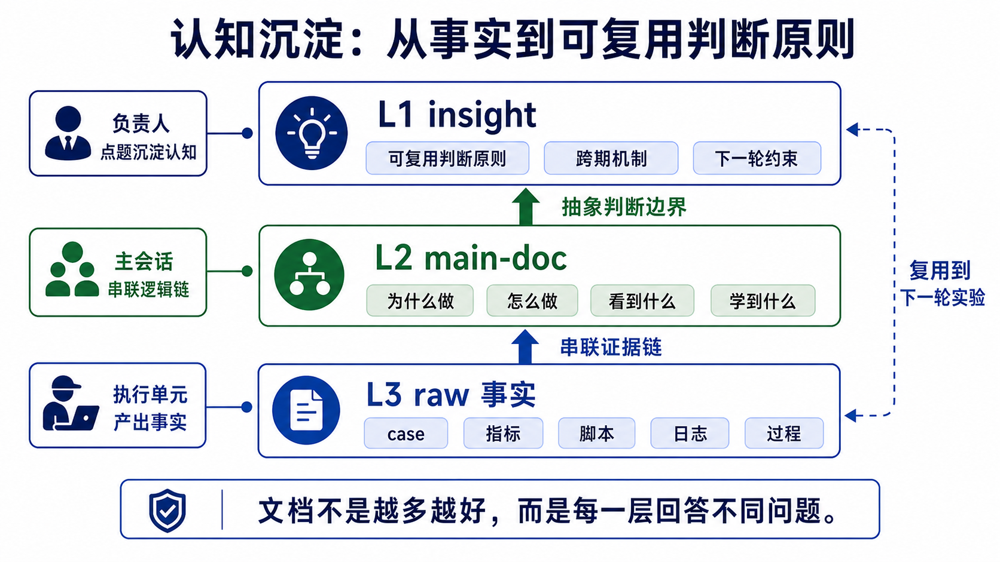

Hypothesis-Driven Experiment Management
算法方案迭代中的 AI 工具实践
AI 工具最有价值的地方，不是替人多写文档，而是把实验迭代中的假设、证据和决策边界守住。 在一个定版的实验工作台里，大模型才能从泛泛的写作助手，变成参与算法迭代的实验协作者。
开场：AI 工具进入算法实验闭环
很多人第一次把 AI 放进算法实验时，都会遇到同一个问题：它很会跑数、写分析、补报告，但跑着跑着路径猜错了、数据口径漂了、结论边界也变模糊了。表面上省了执行时间，实际上把校验成本推迟到了负责人身上。
这场分享聚焦一个更具体的问题：
怎样让 AI 参与算法实验迭代，同时不让假设、证据和决策边界漂移？
过去一段时间，我一直在用大模型辅助做对话式 AI 产品里的算法实验，比如回复质量、候选排序和奖励设计。这类工作和调参分析、badcase 归因、需求拆解、离线评测、线上实验复盘有一个共同点：AI 的价值不是一次性给出一个神奇方案，而是稳定参与一条可复查的实验闭环。
这个闭环可以写成：实验假设 → 方案设计 → AI 执行委派 → 证据回填 → 归因判断 → 下一轮假设。
这条链里，AI 的参与主要体现为四类协作能力：
- 执行委派：拉数据、跑脚本、看远端日志、检查中间产物。
- 搜索迭代：把复杂算法改动拆成多轮方案搜索和消融验证。
- 线上归因：在结果不符合预期时回头查证据、修正归因，并把线上反馈整理成下一轮可证伪假设。
- 认知沉淀：恢复跨月实验上下文，维护交接文档、registry 和可复用判断。
后文里的"执行单元"，指被委派去跑数、查证据、产出原始材料的 AI 子会话或工具流程；"主会话"负责问题定义、事实复核和最终判断。
这场分享按四块展开：先看一次失控的自动化尝试，再定义 Hypothesis-Driven 框架和定版工作台，然后展开四类 AI 协作能力，最后收束方法边界。
我先从失败案例讲起。普通 AI 协作失控时，核心问题通常是实验环境没有边界：上下文恢复、路径猜测、方案判断、报告写作被混在一起。看清这个失败模式之后，再讲为什么需要 Hypothesis-Driven 和定版工作台。
反面教材：普通 AI 协作为什么会失控
1.1反例：大一统实验管理助手
一种很自然但危险的设计，是把实验文档、索引、报告、交接和检查都交给同一个实验管理助手。出发点很合理：实验材料复杂，AI 看起来也适合做整理、检查和同步。
这类助手很容易一路变大：
- 先补目录规则：实验放哪里、脚本放哪里、过程材料放哪里。
- 再补检查规则：格式检查、强校验、索引同步、收尾检查。
- 再补抽象规则：什么时候写报告，什么时候沉淀可复用认知，怎么判断一轮实验结束。
它看起来越来越完整，但问题没有变少，反而变得更隐蔽：AI 生成的东西更像正式产物，判断责任却被模糊了。
1.2失效原因：AI 被迫替负责人做抽象判断
这类设计最终会撞到职责边界问题。
核心风险不只来自功能数量。即使拆成多个 AI 工具，只要它们仍然自动决定文档层级、结论边界和认知沉淀，判断责任还是会被下沉给 AI。如果把全生命周期管理、文档路由、格式检查、收尾检查、认知抽象和索引同步都自动化，AI 就会被迫替人判断：
- 这份材料应该是原始证据、阶段主文档，还是汇报报告？
- 哪些事实可以上升成结论，哪些只能留在过程记录里？
- 哪个问题已经关闭，哪个问题还只是暂时没继续查？
- 哪些结论可以复用，哪些只是这一轮实验的局部现象？
这些判断一旦自动化，错误就会被包装成正式产物。这类大一统设计的问题可以归纳成五类：
F1职责过载
F2判断下沉
F3受众混杂
F4产物漂移
F5交接失真

失败模式的本质是：问题不是 AI 不够强，而是环境没有边界。没有边界时，AI 产出的文本越完整，后续越难追溯。
1.3可迁移结论：自动化要远离抽象判断
这条经验可以迁移到任何长期实验项目：
- 能搬运事实、检查路径、同步索引的事情，可以自动化。
- 需要判断"什么重要、能不能下结论、该沉淀到哪一层"的事情，必须由负责人点题。
- AI 工具越靠近结论层，越要减少自动生成，增加证据引用和纠错留痕。
实验管理工具仍然有价值，但它应该把自动化放在事实搬运、路径检查和状态同步上。越靠近抽象判断，越要保留负责人点题、证据引用和纠错留痕。
框架核心：Hypothesis-Driven，而不是 Process-Driven
Hypothesis-Driven 指的是：实验始终围绕可证伪假设（falsifiable hypothesis）推进，而不是围绕流程动作堆叠。
每轮实验都应该回到这条链：假设 → 实验动作 → 证据 → 判断 → 下一轮假设。
这条链解决的是几个实际问题：
- 方案讨论不会停留在"我觉得可以试试"，而是变成"我们要验证哪个假设"。
- 执行委派不会变成无目的跑数，而是知道这批数据要回答什么问题。
- 线上归因不会直接越界成效果判定，而是先形成可证伪机制。
- 文档沉淀不会变成流水账，而是回到"本轮学到了什么，下一轮继承什么"。
Jiayi Weng 在 Learning Beyond Gradients 里把这类过程称为 Heuristic Learning (HL)：coding agent 读取反馈，直接修改代码、测试、配置和记忆，让软件系统持续吸收经验；更新对象从模型参数转向可维护的软件结构。对算法实验来说，类似的更新对象是实验工作台本身：通过文档分层、结构化登记表和交接文档，把假设、数据契约、评测协议、线上实验口径、交接状态和可复用认知显式保存下来。
以一类对话模型优化为例，问题一开始看起来像"调一个全局 reward 权重"。内容能力要更强，轻量闲聊要更自然，边界能力要更稳，安全不能掉。连续几轮以后会发现，继续在同一套全局目标里折中，很容易修好一个场景、带坏另一个场景。
Hypothesis-Driven 的改法是先改问题定义：
假设
不同状态下应该使用不同训练信号和不同验收指标，而不是用一个全局 reward 统一解释。
实验动作
把状态拆成内容承接、轻量交互、边界能力和安全准入几类，并给每类固定目标与验收口径。
证据
用同一套评测协议横向比较候选路线，看各能力块是否互相拖累。
判断
离线只决定候选是否值得进线上，不提前替代线上 AB。
下一轮假设
如果某一块能力掉了，回到对应状态、数据、reward 或教师模型，而不是继续全局调参。
这套体系可以拆成三层：
- Hypothesis-Driven 框架：定义实验推进方式，所有动作都回到"假设 → 实验动作 → 证据 → 判断 → 下一轮假设"。
- 定版实验工作台：固定路径、数据、证据、文档、交接和工具边界，让 AI 能在稳定环境里接手复杂任务。
- AI 协作能力：在工作台约束下稳定承担执行委派、搜索迭代、线上归因和认知沉淀。
其中，文档分层是实验工作台的核心载体：
- L3 原始证据层：存事实、指标、样本和过程。
- L2 阶段主文档层：串起"假设 → 证据 → 判断"链。
- L1 可复用认知层：沉淀跨实验阶段可复用判据。

工作台框架：先定版环境，再让 AI 参与迭代
Hypothesis-Driven 解决的是实验该围绕什么推进；定版工作台解决的是 AI 凭什么稳定参与推进。
对应的工具设计不是把实验管理助手做大，而是把它收窄成一个轻量实验文档管理工具能力。这个工具只保留三类动作：恢复上下文与判断文档落点，维护 handoff、registry、索引和路径一致性，在新建、迁移、改名后做最小同步。
它不代写报告正文，不生成占位主文档，不做覆盖实验全生命周期的重型命令系统，也不自动删除、归档、重命名文件或全量重建索引。
工具能力收窄的原因很直接：工具能力越想全自动化，实验负责人越要介入兜底；工具能力越守边界，实验负责人越能专心做判断。

实际落地时，工作台首先表现为一套稳定目录结构。下面是一个抽象版：
companion_agent/experiments/ ├── INDEX.md # 实验入口索引 ├── {NN-期名}/ │ ├── main_*.md # 阶段主文档 │ ├── series_认知地图.md # 本期认知地图 │ ├── report_*.md # 专题复盘 │ ├── raw/ │ │ ├── *handoff*.md # 当前状态与接力 │ │ ├── pipeline.md # 搜索 / 分析流程追踪 │ │ └── round_*.md # 原始证据与过程记录 │ └── scripts/ configs/ # 可复现执行入口 ├── eval/ # 固定评测协议与结果登记 ├── handoff/ # 跨期交接 ├── insights/ # 可复用认知 ├── schema_ab_results.md # 线上 AB 结果统一 schema ├── ab_results_registry.jsonl # 线上 AB 结果登记 ├── training_registry.md # 训练任务登记 └── tos_registry.md # 数据资产登记
定版实验工作台包含六个固定面：
- 路径固定：实验索引、实验阶段目录、脚本入口稳定。
- 数据固定：数据源、打分链路、奖励公式、线上实验口径都有唯一事实源。
- 证据固定：原始证据先保存样本、指标、脚本、日志、过程，再进入抽象判断。
- 文档固定：阶段主文档回答一个实验阶段的逻辑链，可复用认知只在实验负责人点题后沉淀。
- 交接固定：跨 AI 会话、跨执行单元的接力靠文件化状态机，不靠聊天记录。
- 工具边界固定：每个可复用工具能力只做单一职责，不追求全生命周期自动化。
工作台还覆盖文档目录之外的事实入口。registry 在本文中指结构化登记表：训练任务、评测结果、线上实验 ID、主对照、源数据和结果文档都登记在固定位置。线上 AB 用固定 schema 和 AB registry，离线评测用固定 suite 和 eval registry，训练任务、训练数据、模型产物也单独登记。它们共同回答一个问题：下一轮 AI 或同事接手时，应该从哪里恢复事实，而不是从哪段聊天里猜。
不是给 AI 更多权限，而是给 AI 更明确的工作台。环境越稳定，AI 越能承担复杂任务。
有了这套工作台，AI 的参与可以稳定沉淀为四类协作能力：执行委派、搜索迭代、线上归因和认知沉淀。后文按这四类能力展开。
AI 协作能力一：执行委派
第一类能力最直接：把繁杂、冗长、重复、容易出错的操作交给 AI。这些操作包括：
关键在于 AI 能在稳定工作台里连续执行一组命令，并把结果放回证据链。

对应三类可复用工具能力：
- 远端调试类：优先排查远端流程，确认进程、日志、产物、漏斗和门控。
- 质量分析类：拉取会话级数据，用 LLM-as-judge 做多维质量标注，生成观测报告。
- 线上实验下钻类：针对无意义 query 占比、字数分布、样本提问方式做指标下钻和切片分析。
让 AI 去远端拉一批线上切片数据时，价值不只是写 SQL，而是把取数脚本、样本规模、字段覆盖、异常口径一起写回原始证据。这样负责人验收时看的不是"AI 的结论"，而是可复查的执行轨迹。
这类能力节省的是操作时间，但不替代判断权。人仍然负责设定问题和验收边界，AI 负责执行、排查和证据整理。
AI 最先带来的收益，是把实验负责人从繁杂操作中释放出来。但它必须把每一步结果落到原始证据，而不是直接产出结论。
单点工具能力只能解决局部执行。AI 要稳定串起多步实验，还需要搜索迭代工作流。
AI 协作能力二：搜索迭代
本文里的"搜索"指：在正式训练或上线前，把一个算法目标拆成一组候选方案，通过离线搜索、消融和参数扫描，用同一套评价协议（evaluation protocol）逐轮排除、修正、收敛。
以回复形态优化为例，主问题可以定义为：
在当前候选池和评价口径下，哪一种奖励函数、重排策略或候选过滤策略，能把排序推向目标行为分布，同时不诱发 reward hacking / metric gaming？
这个问题需要搜索迭代，因为单点策略只能验证链路中的一层。几轮搜索连起来，才能定位瓶颈到底在候选池、reward 形状、训练迁移，还是评价协议。
- 长度惩罚验证长度压力能否改变回复形态，同时暴露短问句、模板化追问等副作用。
- 偏好分权重验证偏好信号能否保住自然度；目标行为分布压不住时，问题转向行为约束或样本结构。
- 候选过滤验证候选池是否存在足够多目标行为候选；训练后不迁移时，问题转向训练目标、数据分布或 reward 形状。
- 离线均值验证整体水位，case 和尾部分布验证是否出现局部退化。
搜索迭代的价值，是把大问题拆成一组可回答的小判断：当前瓶颈在哪一层，哪条路线已经被证伪，下一轮该补评价协议、改 reward 形状、换候选池，还是进入训练后复验或线上实验。
离线方案搜索能集中体现这套工作流。它不是一次简单地比较几个方案，而是多轮搜索迭代组成的假设搜索。其中，"主会话"负责定义问题和验收边界，"执行单元"负责跑数、查证据、产出原始材料；主会话再核查证据、修正判断并决定下一轮问题。
核心分工很简单：主会话负责问题定义和验收边界，执行单元负责原始证据，所有状态通过文件化接力进入下一轮。
5.1一次搜索迭代的标准动作
一次搜索迭代通常包含五步：
- 主会话出问题定义：本轮要搜索的方案空间、要回答的具体假设、需要的证据、判停 / 推进判据。
- 执行单元跑原始证据：每个执行单元负责一个子任务，产出独立文档，命名清楚迭代顺序和主题。
- 主会话对齐事实：核查原始证据里的关键数字、字段、路径和链路。
- 错误留痕：如果发现幻觉或错误数据源，在原文档头部加纠错段，说明哪些错、哪些相对结论仍可读、下一轮该怎么补。
- 交接文档同步状态：把已完成、已决策、未决问题、纠错结论写回交接文档，作为下一轮入口。

协议的核心不是"多执行单元并行架构"，而是复杂实验时的协作纪律：问题定义和原始证据产出分离，错误留痕，状态接力。
5.2多路线拆分：让候选路线能接力收敛
多路线搜索的关键，是先把混在一起的目标拆成几条可独立验证的路线。每条路线只回答一个能力块的问题，主会话负责把路线状态接回同一轮判断。
- 先把目标拆成几个能力块，而不是继续调一个全局权重。比如一条路线保内容能力，另一条路线保轻量交互和边界稳定。
- 每条路线只保留一个主假设和对应验收口径，避免同时解释多个能力变化。
- 执行单元只产出这条路线的原始证据，不顺手改写总判断。
- 每次跑完只往 registry 追加一行事实：候选是什么、证据目录在哪里、摘要指标是什么、当前读法是什么。
- handoff 只同步当前候选、已证伪路线、在跑任务、未决问题和证据路径。
- 进入线上 AB 前，离线结论只用于候选筛选和风险解释，不提前写成效果结论。
这些登记和交接的价值不在于形式完整，而在于让后续任何一个 AI 会话都能恢复：为什么这么判断、哪个候选被证伪、哪条路线还在跑、下一轮为什么这么走。路线拆开后，下一步是让路线之间可比较，这需要固定评测协议。

5.3固定 eval：让多路线比较成立
方案搜索最怕每一轮换一套尺子。前一轮看离线均值，后一轮看 case，第三轮又换一个 judge，表面上一直在推进，实际上可能只是评价协议在漂移。
本文中的 fixed eval 指一套不随候选临时变化的离线评测协议：
- 每个 suite 先写清楚样本、生成参数、judge、主指标和结论边界。
- 每次 eval 只登记摘要指标、结果目录、脚本和当前读法。
- 大结果保留在数据目录或服务器目录，文档只保留可追溯入口。
- 离线 eval 只用于候选筛选和风险解释，不替代线上 AB。
fixed eval 对 AI 协作形成了直接约束：AI 可以跑评测、补登记、对比模型水位，但不能临时换指标来证明一个方案"看起来更好"。这相当于把一部分实验纪律外置到环境里。
5.4数据契约纠错：先问数据能不能回答问题
关键风险是：AI 会把错误数据契约（data contract）整理成一份看起来很完整的报告。
某轮自动化搜索的入口是一份追踪文档。它默认训练池可以直接用于候选方案排序：每条样本都有多条候选，也有逐候选打分。执行单元继承了这个前提，开始跑方案排序和模拟校准。问题是在执行中暴露的：本应能对齐的候选文本对不上，本应存在的逐候选分数也找不到。主会话没有继续接收报告结论，而是回到源文件核查，确认目标训练池只是训练样本，不是候选方案对比表。
因此，第一轮报告不能再作为决策依据。能保留的只有一部分方案间相对线索；覆盖率、交集规模、绝对指标和通过 / 驳回判断都要作废。处理方式不是删除原报告，而是文件化纠错：
- 写纠错文档，说明错前提、真实数据结构和下一轮数据源。
- 在错误报告头部加纠错说明，把报告状态从"可用于决策"降级成"只保留相对线索"。
- 在追踪文档和 handoff 里指向纠错文档，让下一轮基于正确数据源重跑。
这件事的可迁移经验是：AI 跑实验前，不只要检查代码能不能跑，还要检查数据是否真的支持这个问题。数据契约不成立时，报告越完整，误导性越强。
5.5关键机制：文件化接力，而不是聊天接力
工作流有效，不是因为执行单元永远正确，而是因为它把"下一轮怎么继续"落在文件里，而不是落在某一次聊天上下文里。
文件化接力至少包含三类文件：
- 原始证据文档：记录执行过程、数据路径、关键数字和样本，不急着抽象成结论。
- 纠错说明：直接写在错误文档头部，说明哪里错了、哪些相对结论还能读、哪些绝对数字不能再用。
- 交接文档：同步已完成、已决策、未决问题和下一轮入口，让下一任执行单元不用从聊天记录里恢复状态。
机制默认执行单元可能错，并把纠错设计进流程：
- 问题定义和原始证据产出分离：主会话负责方向和验收边界，执行单元负责执行和事实材料。
- 事实核查显式化：路径、字段、覆盖率、样本口径都要回到源文件。
- 错误留底：纠错说明比删除更有教育价值。
- 交接文档是状态机：它不是工作日志，而是下一轮搜索迭代的入口。
AI 协作能跑稳，不只是模型能力问题，更是文件化接力机制问题。
AI 协作能力三：线上归因
离线方案搜索解决的是候选方案收敛；线上归因解决的是另一个问题：复杂线上信号如何进入下一轮可证伪假设。
候选模型进入线上实验后，AI 适合承担阶段性观测、点踩样本下钻和归因材料整理。这类任务需要把很多维度串起来：
- 线上正反馈、负反馈和流量分母。
- 业务场景、用户角色、内容标签、长度桶等切片。
- 回复长度、是否追问、是否使用语气符号、是否出现模板化开头等行为分布变化。
- 同 query 的 case 对比。
- 样本模式归纳。
- 下一轮评价规则或奖励规则修订方向。
线上归因必须先设边界：
离线观测只做归因观察（observational attribution），不做因果效果（causal effect）判定。最终效果仍以核心线上指标为准，比如留存、长期效果和对话质量指标。

线上归因也需要固定机制，而不是每次临时让 AI 去读看板：
- 固定主对照，避免 AI 继承平台默认对照组。
- 固定主指标和解释指标，避免用字数、轮次、反馈率替代最终效果。
- 固定活跃度、query 类型、case 下钻等解释维度，方便把线上变化转成下一轮假设。
- 每个线上实验登记证据文档、源数据、当前成熟度和读法边界。
这些约束让跨会话归因口径保持一致，线上胜负仍由核心线上指标判定。
线上归因需要先做指标拆解：
- 先看整体指标是否同向：正反馈、负反馈、样本量和流量分母要一起看，避免只盯一个上升或下降的指标。
- 再看结构变化来自哪里：按场景、用户类型、query 类型、长度桶等切片，找出变化是否集中在少数结构上。
- 再看模型行为怎么变了：回复长度、追问比例、语气符号、模板化表达、拒答 / 边界处理是否发生系统变化。
- 回到同 query case：用同一个 query 下的基线组和实验组回复，检查统计变化对应的真实行为差异。
线上归因经常会出现这种结构：整体指标看不出单向结论，拆开后才发现变化集中在少数 query 类型。同 query case 进一步说明，实验组不是"整体更差"，而是在某些场景里多做了不必要的延展。
这时下一轮要验证的就不是"是否直接回退模型"，而是更具体的问题：能不能保留有效延展，同时限制特定场景下的多余延展。
这样 AI 产出的不是线上结论，而是下一轮可检验的假设：哪些场景要收紧，哪些行为要保留，哪些指标要继续观察。AI 可以把线上复杂信号压成下一轮可证伪假设，但不能越界替代线上实验的因果效果判定。
AI 协作能力四：认知沉淀
算法实验最容易浪费的地方，是每一轮都只留下"这轮成败"，没有变成下一轮可复用的判断原则。认知沉淀可以分成两套互补机制：一套是静态文档分层，一套是文件化长程记忆。

7.1三层文档：静态认知载体
三层文档解决的是"同一份实验产出要服务不同读者"的问题：
L3 · 原始证据层
样本、指标、脚本、日志、过程事实。面向执行单元和未来复现。
L2 · 阶段主文档层
单个实验阶段的主线，回答为什么做、怎么做、看到什么、学到什么。面向实验负责人和同阶段同事。
L1 · 可复用认知层
跨实验阶段可复用认知，只回答一个关键问题。面向后续决策。
原则
每一层回答不同问题。文档不是越多越好。
实际实验可以沉淀出多类 L1 判断原则。它们不是通用结论模板，而是给下一轮实验提供判断边界：
L1·a离线偏好分不能当验收指标
L1·b归因要干预验证
L1·creward shaping 有能力边界
7.2交接文档 / 历史归档 / 认知地图：长程记忆机制
文档分层解决的是信息密度问题，但 AI 协作还有另一个矛盾：项目跨月、跨 AI 会话、跨执行单元，而模型上下文窗口总会丢。解法是文件化长程记忆，主要有三类：
- 交接文档：写当前状态、已完成、已决策、未决问题和纠错结论。它写给下一任执行单元看，不是业务汇报。
- 历史归档：保存被替换的规划、草稿和仍需追溯的材料。追溯某个路线选择的原因时，它是证据来源。
- 认知地图：记录一个阶段最高层的判断节点。它的定位是后续实验对齐判断口径时的入口。
前面提到的 registry 也是长程记忆的一种结构化形态。训练 registry 记录任务、数据和模型产物；eval registry 记录 fixed suite 的结果；AB registry 记录实验 ID、主对照、源数据和统一结果文档。它们不替代主文档，但能让 AI 恢复事实时少猜很多。
这些文件的共同点是：不依赖聊天上下文，不依赖模型记忆，而是把关键状态落到文件系统里。
这是 AI 工具能长期稳定参与实验的前提。没有文件化长程记忆，每次新 AI 会话都会从"我大概记得"开始；有了它，AI 才能从"请先读这些入口文件"开始。
方法边界
这个框架的目标是让 AI 稳定参与算法迭代。它的边界很清楚。
AI 适合做
- 恢复上下文。
- 执行繁杂操作。
- 搜索证据。
- 构造反事实或同 case 对比。
- 整理原始证据。
- 发现明显矛盾。
- 生成下一轮可证伪假设。
- 维护交接文档和索引。
AI 不应该自动做
- 替实验负责人决定可复用认知主题。
- 在证据不足时写定型结论。
- 用离线代理指标或归因观察替代线上因果效果判定。
- 静默删除、归档、重命名文件。
- 把索引当成自动数据库全量重建。
让 AI 参与算法迭代的前提，不是给它更多上下文，而是先把实验环境做成一个有边界、有索引、有证据链的工作台。